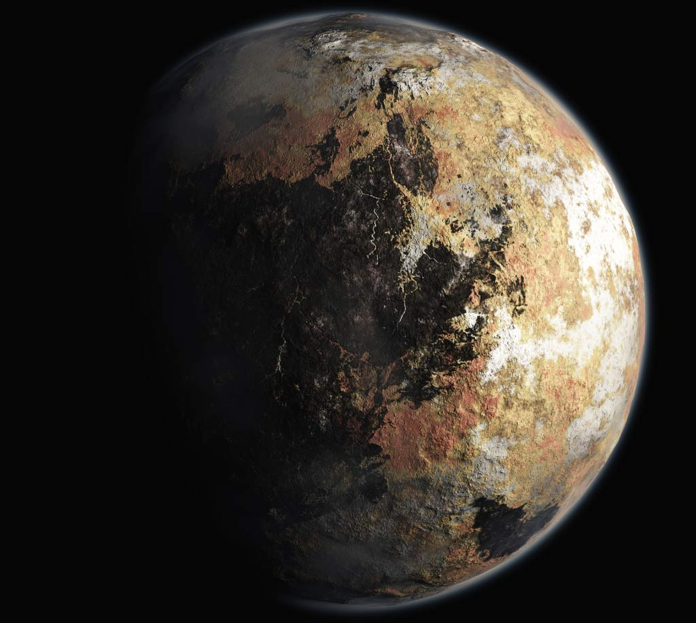
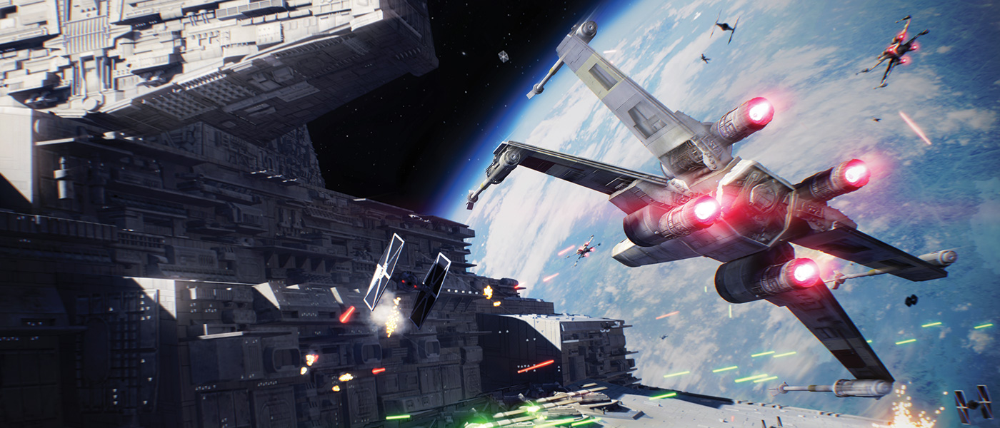
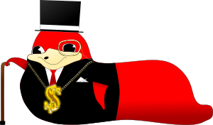

Jeu spatial où vous devez empêcher la destruction de la planète Ugada par les Zoulous Galactiques.
L'univers
Vue d'ensemble de la situation politique de la Galaxie d'Andromède.
L'histoire
L'histoire d'andromeda se situe dans la Galaxie d'Andromède, cinq mille ans après l'ère humaine...
En 5400 AEH (après l’extinction humaine), la Galaxie Andromède est déchirée entre deux factions idéologiques principales : le Monde libre dirigé par la République d’Ugada, et l’Empire des Zoulous Galactiques. Des tensions naissent entre les deux camps à cause de l’invasion par les Zoulous Galactiques de la planète naine d’Esper, capitale du Système d'Esper, et de l’extraction illégale de ses gisements de pierrite, un minerais extrêmement rare utilisée dans la confection de moteurs à voyage supraluminique.

La planète naine d'Esper, capitale du Système d'Esper, semblable à Pluton.
Ces tensions sont nourries par une politique agressive et militariste des Zoulous, qui poursuivront pendant deux décennies la conquête de planètes riches en ressources. A vrai dire, les Zoulous Galactiques sont connus et méprisés par la galaxie tout entière pour leur arrogance, leur soif de richesse et de pouvoir. Ils contrôlent la majeure partie des richesses, des fonctions politiques et des entreprises de la Galaxie, comme par exemple la Banque @ndromeda et la firme énergétique Volta. En réaction à la domination Zoulou, les Ugadiens s’organisent avec leurs alliés d’Esper et du système d'Armor afin de repousser leurs oppresseurs. C’est ainsi que la Guerre d’Andromède débute en 5420 AEH, vingt ans après l’annexion par les Zoulous Galactiques d’Esper.

Malheureusement, la Guerre d'Andromède s'annonce être la plus meurtrière des guerres de l'Univers...
Les factions
Le monde d'andromeda est divisé en deux blocs idéologiques : le Monde libre et l'Empire.
Les personnages
Vous incarnez Buba Buda, un jeune pilote de vaisseau spatial originaire de la planète d'Ugada.
Buba Buda
Pilote de vaisseau spatial
Buba Buda est encore jeune, il n'a que 200 ans ! Jeune pilote tout juste diplômé de l'ESIEE, il travaille au Département de Recherche de Minerais de l'entreprise Ugada Tech. Impulsif, il s'engagera à l'Armée Libre lorsque les Zoulous Galactiques envahiront le Système d'Esper.

Codou Chaka Ier
Empereur de l'Empire des Zoulous Galactiques
Codou Chaka est connu pour être un empereur impitoyable et avide de profits. Sa fortune personnelle excède les quadrilliards d'@coins ; de plus, il est le propriétaire de la quasi totalité des entreprises de la galaxie. Son pouvoir est tel qu'il contrôle d'une main de fer la large constellation des Zoulous Galactiques et compte étendre son influence au sein même du Monde libre.
Le système de jeu
Le voyage supraluminique
Le système de déplacements est la spécificité d'andromeda.